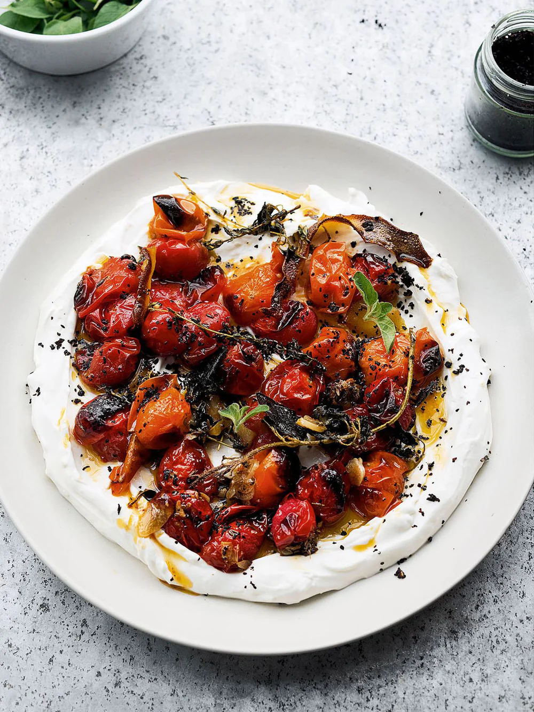

Charred Tomatoes with Chilled Yoghurt

Description
One of the beauties of this dish lies in the exciting contrast between the hot, juicy tomatoes and fridge-cold yoghurt, so make sure the tomatoes are straight out of the oven and the yoghurt is straight out of the fridge. The heat of the tomatoes will make the cold yoghurt melt, invitingly, so plenty of crusty sourdough or focaccia to mop it all up with is a must alongside.
Ingredients
- 350g cherry tomatoes
- 3 tbsp olive oil
- ¾ tsp cumin seeds
- ½ tsp light brown sugar
- 3 garlic cloves, finely sliced
- 3 thyme sprigs
- 5g fresh oregano: 3 sprigs left whole and the rest picked, to serve
- 1 lemon: finely shave the skin of ½ to get 3 strips and finely grate the other ½ to get 1 tsp zest
- 350g extra thick Greek-style yoghurt (such as Total), fridge-cold
- 1 tsp urfa chilli flakes (or ½ tsp regular chilli flakes)
- flaked sea salt and black pepper
Steps
- Preheat the oven to 200°C fan.
- Place the tomatoes in a mixing bowl with the olive oil, cumin seeds, sugar, garlic, thyme, oregano sprigs, lemon strips, ½ teaspoon of flaked salt and a good grind of pepper. Mix to combine, then transfer to a baking tray just large enough to fit all the tomatoes together snugly. Roast for 20 minutes, until the tomatoes are beginning to blister and the liquid is bubbling. Turn the oven to the grill setting and grill for 6–8 minutes, until the tomatoes start to blacken on top.
- While the tomatoes are roasting, combine the yoghurt with the grated lemon zest and ¼ teaspoon of flaked salt. Keep in the fridge until ready to serve.
- Once the tomatoes are ready, spread the chilled yoghurt on a platter (with a lip) or in a wide, shallow bowl, creating a dip in it with the back of a spoon. Spoon over the hot tomatoes, along with their juices, lemon skin, garlic and herbs, and finish with the picked oregano and Urfa chilli. Serve at once, with some bread.